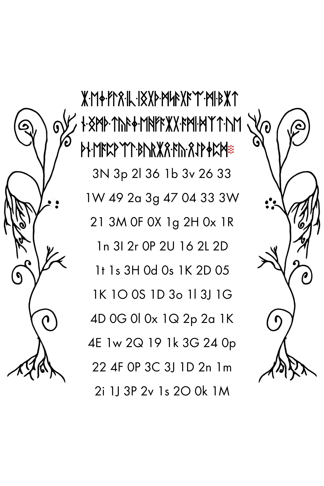

Start solving: a practical introduction
Find the right pages, reproduce known results, and turn an idea into a test someone else can repeat.
On this page
Liber Primus combines pictures, rune text, printed numbers, and data hidden inside image files. Start by asking which layer a claim concerns. A title page can have no runic paragraph yet still carry a message extracted from its image file with OutGuess, a steganography tool. Decoding visible runes and extracting hidden bytes are separate checks.
1. Know the collection
The first release contains 17 images, including two title pages. The second release contains 58. In the archived source snapshot, LP1 has known readings and LP2 has readings for 56 and 57; LP2 pages 00–55 remain unsolved. This is dated documented knowledge, not live proof that nobody has solved anything else.
Use IDs such as LP2-31. “Page 31” without a release or archive name is ambiguous. The numbering cross-reference maps release IDs to archive filenames.
This guide starts with the manuscript. To follow the puzzle from its first 2012 image through the 2013 steps and into the 2014 manuscript, use the separate Cicada history route. Earlier steps give context; they are not presumed keys to LP2.
The illustrated cover with compasses comes from an earlier puzzle stage and has its own entry. It is different from LP1-00, the plain title page, and does not change the release numbering.


2. Reproduce one short reading
Open the warning in the reader. Compare the original image with its runes, then follow the complete warning reading and its Atbash explanation. Use the 29-symbol alphabet, not English A–Z. Count a multi-letter rune as one symbol.
Start in the browser
No installation is needed for this first check. Atbash reverses the 29-rune alphabet, so an input index c becomes 28 − c. The warning starts with these three runes:
| Input rune | Index | 28 − index | Label |
|---|---|---|---|
| ᚱ | 4 | 24 | A |
| ᛝ | 21 | 7 | W |
| ᚱ | 4 | 24 | A |
Compare the shapes with the original warning image and the alphabet chart. The labels begin A WA…: the opening article and the start of WARNNG. Spaces and punctuation are not rune indices, so they are not transformed by the subtraction.
Continue with the worked Atbash table, or download the complete warning trace (CSV) to inspect every rune. The trace explanation describes its columns and source record. Checking three symbols confirms those three calculations; it does not yet verify the entire page.
Then verify the complete reading with Python
python scripts/verify_bundle.py REFERENCE-DATA-CONTENTS.json
python scripts/reproduce_reading.py warning
python scripts/reproduce_reading.py --check-allDownload and extract the reference-data ZIP, then run these commands from the extracted folder with Python 3. Keep the folders together: the script reads the included text and parameter files. After the file check, the warning command prints its literal reading; --check-all checks all 17 known runic-page outputs. All three commands run locally with the Python standard library and make no AI requests. A full repository checkout also works.
The first command checks the extracted files against the bundle’s own manifest and should report 0 problems. It does not authenticate the manifest. If it reports missing or changed files, follow the setup check before interpreting a decoding result.
What success looks like
The warning output begins A-WARNNG.BELIEUE-NOTHNG-FROM-. Those spellings are expected literal rune labels, not evidence that the script failed. The complete control check prints:
PASS: 17 literal page readings match the published controls exactly.This confirms that the supplied recipes reproduce the stored known outputs. It does not independently authenticate the source files or validate a proposed solution to an unsolved page. Use the download catalogue for file hashes and the transliteration guide for the difference between literal labels and contextual English.
Optional second check: one row of the number grid
Open LP1-05 and find the five-by-five grid below the text. Its first row mixes four printed numbers with one rune word. In the known reading that word is labeled SHADOWS.
- Leave the printed entries
272,138,131and151unchanged. - Use the worked rune-cell table to check the word’s seven rune values. Their sum is
341. - Add the row:
272 + 138 + 341 + 131 + 151 = 1033.
This verifies one row, not the whole square. The full explanation shows all five rows, five columns and two main diagonals. If you have Python, python scripts/check_number_examples.py reproduces those checks from the included page and alphabet records.
The important distinction is the input: the printed decimal numbers stay as numbers, while rune words are replaced by additive prime values. Do not apply a prime-index lookup to every entry or replace the words with ordinary English spelling. Those would be different procedures.
New to the terminal? Running the reproduction scripts walks through setup, expected results, trace columns, and common errors.
3. Learn the other layers
- Rune indices and prime values: cipher arithmetic versus prime sums.
- Vigenère: keys, direction, and continuity across pages.
- The cover payload chain: OutGuess, hexadecimal, XOR, signatures, and transposition.
- Spelling and prime sums: a reproducible numerical property versus an explanation of a spelling’s purpose.
For the ideas behind the decoded passages, follow the philosophy reading route, then compare the William Blake parallel. These guides distinguish the manuscript words, interpretation, and possible outside sources.
Before choosing a large test, read search space and bounds: count the choices, decide what would count as success, and distinguish a completed search from an interrupted one.
4. Make an idea testable
Choose a page, a region, a transformation, and a rule for judging the output. “Try primes” leaves all four undecided. A narrower proposal is: start at the first rune of LP2-31, subtract consecutive prime-minus-one values modulo 29, advance the prime sequence only on runes, and continue through punctuation without resetting or skipping runes. This tells someone what to calculate; it still does not say what result would count as a match.
State that criterion before inspecting the output. For example, you could require an exact, specified 12-rune opening, then report every configuration tested and every match. This would test that opening under those rules, not establish that the method is correct for the page.
Check Have we tried it? for the technique and scope. Browse the published experiment families or describe a technique to find related records. Open the individual record and compare its inputs, boundary rules, parameters and exclusions with your proposal. An empty result means no published match here, not that an idea is new. Follow the reproducibility guide.
Follow one completed experiment
The first-experiment walkthrough takes you through the published trigram-repeat test: read its chart, compare its scope with a proposed idea, inspect the downloaded counts, and reproduce the calculation. It also explains an important distinction: a script can pass its reproduction check even when the experiment does not support the tested hypothesis.
Find the family behind your idea
If you do not know a cipher's name, start with what your idea does. The solving-method map groups approaches and links their narrower experiments. Its guides also cover methods with no linked test; having a guide does not mean that a method has been tried on your page.
| Your idea changes… | Start here | First choice to make explicit |
|---|---|---|
| The order of existing runes | Reading routes or page order | Which objects move, and whether every symbol is used once. |
| The value of each rune | Substitution or numerical keystreams | Whether the rule is fixed or changes with position. |
| Which symbols survive | Positional extraction or null removal | The selection rule and treatment of skipped positions. |
| How marks become symbols | Alternative notation | Measurements, grouping and orientation before assigning letters. |
| How numbers are interpreted | Number representations or arithmetic expressions | The base, allowed operations and maximum search size. |
| The proposed plaintext | Cribs or language comparisons | The cipher assumptions under which the comparison is meaningful. |
Combining two rows does not remove their choices. For example, “read a spiral, then subtract primes” needs both a complete route and a complete numerical schedule. Keep the operation order fixed and record every added offset, reversal, reset or spelling option.
Compare the tested question, not just its title
- Read the scope. Compare source files, page regions, symbol representation and boundaries. Two tests on the same page can use different inputs.
- Compare the choices. Check the actual keys, offsets, routes and exceptions. A family label does not mean every variant was searched.
- Read the acceptance rule. An exact opening-crib test answers whether those openings match under its parameters. It is not a search for every possible readable continuation.
- Identify the next distinct question. If your idea is outside those bounds, state exactly what changes. If it is inside them, reproduce the record before duplicating its search.
Use the experiment-organization guide to decide whether that next question belongs as a variant of an existing test. A controlled extension is useful; a new title for the same calculation does not add coverage.
Choose one first investigation
You do not need to learn every technique at once. Choose a route that produces a small result someone else can inspect.
| If you want to… | Start with | Keep as your result |
|---|---|---|
| Read and interpret | Compare the warning and later instructions | Exact passages, their locations, and your interpretation stated separately |
| Inspect artwork | Compare the insect drawings | Page IDs, visible similarities and differences, and any named comparison source |
| Check arithmetic | Reproduce LP1-05’s mixed-grid conversion | The original cells, rune-value substitutions, and all twelve line sums |
| Measure a text | Reproduce LP2-31’s IoC | The input hash, rune counts, exact fraction, and a statement of what it cannot establish |
| Study a decoding | Trace the Welcome’s repeating key | A few input/output steps, the key position, and the treatment of recorded exceptions |
Before expanding a numerical search, check what your operation preserves. For example, whole-stream IoC cannot choose between rearrangements of the same symbols. For literary or visual work, a well-supported comparison is useful even when it supplies no cipher key.
A first observation using only your phone
Open LP2-49 in the reader. Beneath the three runic rows, find the third row of the letter-and-number grid. Count grid rows from one and columns from left to right. This row reads:
21 3M 0F 0X 1g 2H 0x 1R
[600, 1560, 1200, 160]. Download the complete original.- Compare column 4,
0X, with column 7,0x. The initial character is zero in the archived transcription; the second character differs in case. - Write the observation with its location: “LP2-49, grid row 3: column 4 is transcribed as 0X; column 7 as 0x.”
- Keep a proposed explanation separate. This difference does not yet tell you whether the entries encode letters, coordinates, or numbers.
You have now made a small claim another reader can check. The grid transcription guide explains ambiguous characters and leading zeroes; its coordinate exports let you check the same positions in structured data. If you disagree with a glyph, preserve the original transcription and document the proposed correction with the image location.
Find the page behind a quotation
Suppose you remember the phrase “circumference practices” and want to cite it. A complete reading can cover several sheets, so finding the section is only the first step.
- Search for
"circumference practices", including the quotation marks. LP1-10 is the literal-reading match. Other sheets can appear because their records include the same complete section text. - Open LP1-10’s known reading. The word crosses its first two literal lines:
CIRCU/thenMFERENCE. Compare the page’s original image when checking the underlying runes. - Keep the location with your note: “LP1-10, literal reading, lines 1–2; word joined across the line break.” A statement about what the circumference means is your interpretation and needs its own explanation.
With Python, repeat the lookup using python scripts/reading_concordance.py "circumference practices" --literal. Add --json to retain the exact excerpt, character offsets, and page-record checksum. The concordance guide explains those fields and why character positions are not rune indices. This exercise works with a known reading; it does not search for English words inside unsolved ciphertext.
Ready to contribute
You should be able to identify an exact image, distinguish raw from corrected transcription, reproduce a known reading, and explain what would count against your hypothesis. You do not need to understand every cipher before inspecting a well-defined detail.
For a worked descriptive analysis, use the index-of-coincidence baseline: exact rune counts, downloadable results, reproduction commands and the limits of frequency evidence.
Sources and verification
Pinned historical walkthrough. Recipes reproduce published controls; they are not new solutions. Local computational verification: 19 October 2026.